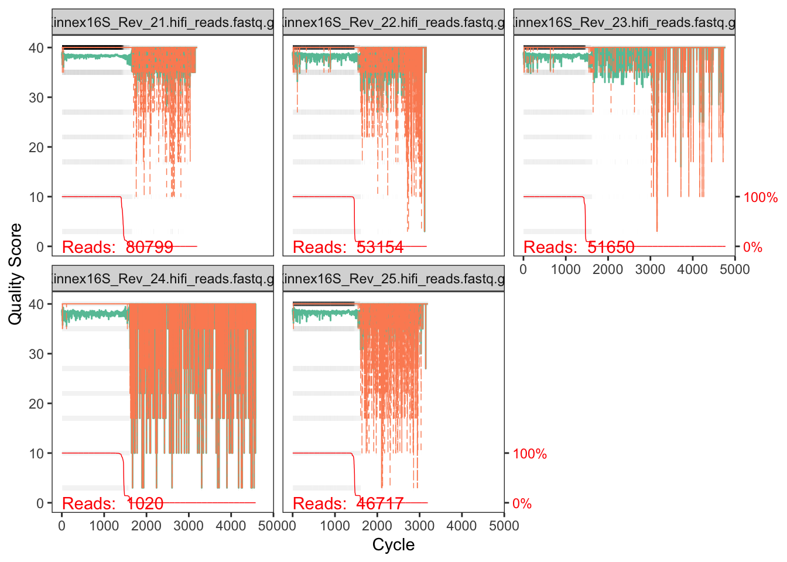
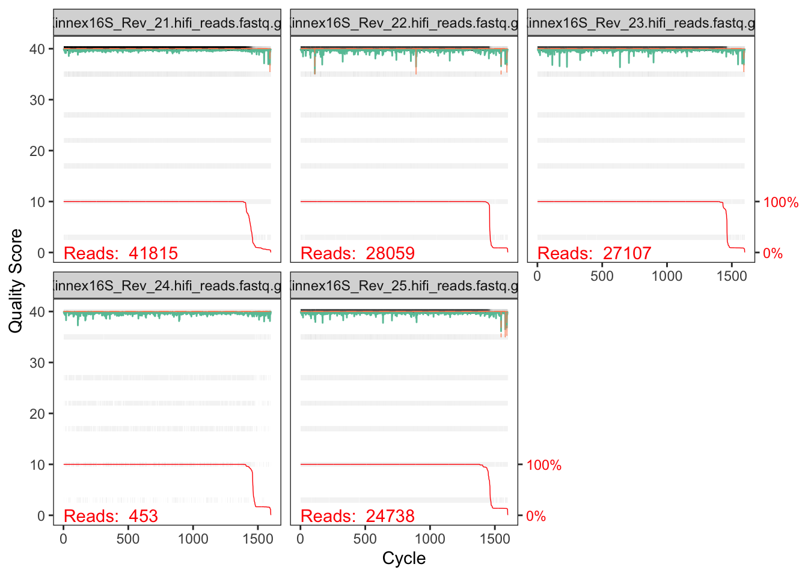
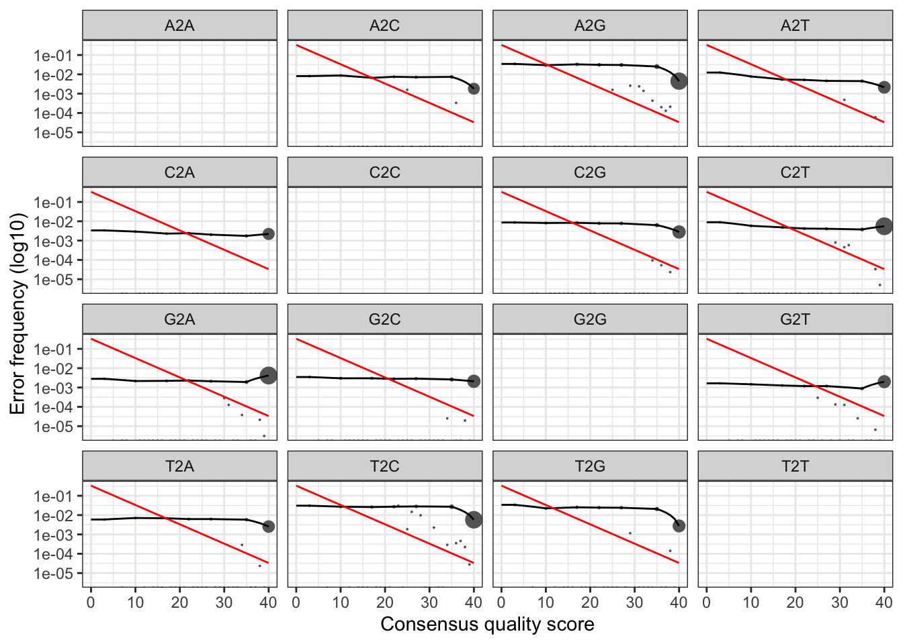
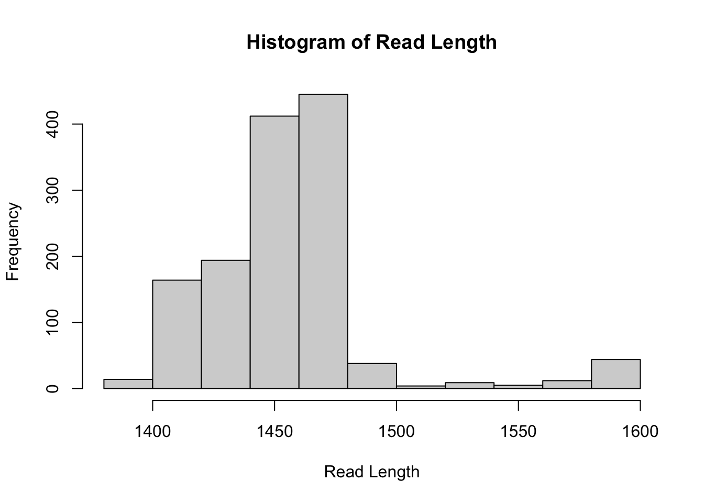

High-throughput amplicon sequencing of the 16S rRNA gene is widely used to profile microbial communities. While traditional short-read sequencing captures only a portion of the 16S gene (e.g., V3–V4), PacBio long-read sequencing allows the recovery of full-length 16S rRNA genes (~1.5 kb). Full-length sequences improve taxonomic resolution, enabling more accurate identification at the species level. However, the workflow in analyzing PacBio data is a bit different than analyzing Illumina short-read data in DADA2. Here, we walk through version 1.38 of the DADA2 pipeline on a small multi-sample dataset. Our starting point is a set of PacBio-sequenced single-end CCS/HiFi fastq files that have been split (or “demultiplexed”) by sample.
Below are major differences between the Illumina short-read and PacBio long-read data:
| Technology | Illumina | PacBio |
|---|---|---|
| Pairing | Paired-end or single-end | Single-end |
| Length | 50-300bp | ~1500bp (full-length 16S rRNA) |
| Orientation | Consistent | Mixed (requires reorientation) |
| Quality Score | Phred 0–40 (sometimes binned) | Phred 0–93 (Sequel) / Phred 0–40 (binned, Revio) |
The data we mainly used in this tutorial was generated using the PacBio Kinnex 16S Library Prep Kit. Kinnex enables high-throughput, full-length 16S rRNA sequencing with barcoded primers, allowing multiple samples to be pooled and sequenced in a single SMRT cell.
Workflow summary:
makeBinnedQualErrfun().| Feature | Kinnex_Revio | Sequel |
|---|---|---|
| Platform | PacBio Revio | PacBio Sequel / Sequel II |
| Library prep | Kinnex kit with PacBio barcoded primers target near full-length 16S (~1.5 kb), enabling multiplexed, pooled sequencing | Custom primers or legacy amplicon kits |
| Read type | CCS/HiFi, single-end | CCS/HiFi, single-end |
| Quality score | Binned Q-scores (3, 10, 17, 22, 27, 35, 40) | Continuous Q-scores (0–93) |
| Orientation | Often mixed (forward/reverse complement) | Often more consistent, but may still need reorientation |
| Throughput | High | Lower |
| DADA2 error function | `makeBinnedQualErrfun()` | `loessErrfun()` (default) |
First, we load the dada2 package.
library(dada2); packageVersion("dada2")## [1] '1.38.0'library(ShortRead)
get.table <- function(tb, rowname = TRUE) {gt::gt(data.frame(tb), rownames_to_stub = rowname)}
rc <- dada2:::rc # reverse compliment.The original dataset consists of environmental microbial samples
collected daily from two distinct bathroom sink P-traps (Sink A and Sink
B) over a two-month period. To reduce computational time for this
tutorial, we only picked five samples, and the raw
.fastq.gz files were randomly downsampled to 10% of their
original sequencing depth using seqkit. The downsampled
dataset used in this workflow is publicly available and can be
downloaded from Zenodo https://doi.org/10.5281/zenodo.18749206.
path <- "~/tutorial_pb_data/revio_pacbio_10" # CHANGE ME to the directory containing the fastq files.
files <- list.files(path, pattern = '.gz$', full.names = TRUE)
basename(files)## [1] "Kinnex16S_Rev_21.hifi_reads.fastq.gz"
## [2] "Kinnex16S_Rev_22.hifi_reads.fastq.gz"
## [3] "Kinnex16S_Rev_23.hifi_reads.fastq.gz"
## [4] "Kinnex16S_Rev_24.hifi_reads.fastq.gz"
## [5] "Kinnex16S_Rev_25.hifi_reads.fastq.gz"First, we need to set up the forward and reverse primer sequences in the data. Make sure you are using the correct primer sequences in your data.
F27 <- "AGRGTTYGATYMTGGCTCAG"
R1492 <- "RGYTACCTTGTTACGACTT"Reads in Pacbio CCS data are in a mixed orientations. Here, we sort
each read into consistent orientation based on forward and reverse
primer sequences, and then remove the primer sequences. Reads that do
not contain the primers are discarded. primer.rev should be
provided in the orientation that would appear in a DNA sequence starting
at the forward primer and being read towards the reverse primer, hence
we use the reverse compliment of the primer sequence.
Note: the removePrimers function is designed for
PacBio CCS data, not for short-read data.
# Place primers removed files in noprimers/ subdirectory
np.path <- file.path(path, "noprimers", basename(files))
np.out <- removePrimers(files, # original file path
np.path, # target directory stores primer removed data
primer.fwd=F27,
primer.rev=rc(R1492), # reverse compliment of R1492
orient=TRUE)
get.table(np.out)| reads.in | reads.out | |
|---|---|---|
| Kinnex16S_Rev_21.hifi_reads.fastq.gz | 83372 | 80799 |
| Kinnex16S_Rev_22.hifi_reads.fastq.gz | 54957 | 53154 |
| Kinnex16S_Rev_23.hifi_reads.fastq.gz | 53510 | 51650 |
| Kinnex16S_Rev_24.hifi_reads.fastq.gz | 1127 | 1020 |
| Kinnex16S_Rev_25.hifi_reads.fastq.gz | 48332 | 46717 |
Most reads are retained, meaning the primers sequences are valid.
Check the quality of our data.
plotQualityProfile(np.path)
The quality score looks good overall. Some reads have longer tails, so we need to set a length window.
Here, we use the option maxEE=2, which is recommended,
and only keep the read with length between 1000 to 1600 bp. Different to
the Illumina data tutorial, for long-read data, we want to keep the 16S
full-length gene (primer to primer). Therefore, we do
not truncate the length of each read.
We set rm.phix=FALSE since Pacbio sequencing does not
use Phi-genomes.
# Place filtered files in filtered/ subdirectory
filt.path <- file.path(path, "filtered", basename(files))
filt.out <- filterAndTrim(np.path, # directory path to files without primers
filt.path, # target directory stores filtered data
minLen=1000,
maxLen=1600,
rm.phix=FALSE, # won't use Phi-genomes
maxEE=2,
multithread=TRUE)
get.table(filt.out)| reads.in | reads.out | |
|---|---|---|
| Kinnex16S_Rev_21.hifi_reads.fastq.gz | 80799 | 41815 |
| Kinnex16S_Rev_22.hifi_reads.fastq.gz | 53154 | 28059 |
| Kinnex16S_Rev_23.hifi_reads.fastq.gz | 51650 | 27107 |
| Kinnex16S_Rev_24.hifi_reads.fastq.gz | 1020 | 453 |
| Kinnex16S_Rev_25.hifi_reads.fastq.gz | 46717 | 24738 |
Data quality looks good after filtering (Store the
plotQualityProfile object, we will use it later).
qp <- plotQualityProfile(filt.path)
qp
derepFastq collapses identical sequencing reads into
unique sequences. In the PacBio pipeline, this step serves as a critical
sanity check for sequencing quality and replication
depth.
Why this is different from Short-reads: PacBio full-length 16S sequences (~1.5 kb) are more prone to accumulating random errors than short reads. This increases the risk of lacking sufficient replication (repeated observations of the same sequence), which is a fundamental requirement for the DADA2 algorithm to perform sample inference.
The Sanity Check: Compare the number of unique sequences to total reads in the output below. * Good: Unique sequences are significantly fewer than total reads (high replication). * Bad: Unique sequences \(\approx\) Total reads (mostly singletons). * Implication: The sample lacks the repeated observations required by the DADA2 algorithm to statistically differentiate true biological variants from sequencing noise. The inferred ASVs for this specific sample will be unreliable, and the sample should likely be excluded.
derepFastq(filt.path, qualityType="FastqQuality", verbose = TRUE)## Dereplicating sequence entries in Fastq file: ~/tutorial_pb_data/revio_pacbio_10/filtered/Kinnex16S_Rev_21.hifi_reads.fastq.gz## Encountered 22622 unique sequences from 41815 total sequences read.## Dereplicating sequence entries in Fastq file: ~/tutorial_pb_data/revio_pacbio_10/filtered/Kinnex16S_Rev_22.hifi_reads.fastq.gz## Encountered 12444 unique sequences from 28059 total sequences read.## Dereplicating sequence entries in Fastq file: ~/tutorial_pb_data/revio_pacbio_10/filtered/Kinnex16S_Rev_23.hifi_reads.fastq.gz## Encountered 15695 unique sequences from 27107 total sequences read.## Dereplicating sequence entries in Fastq file: ~/tutorial_pb_data/revio_pacbio_10/filtered/Kinnex16S_Rev_24.hifi_reads.fastq.gz## Encountered 414 unique sequences from 453 total sequences read.## Dereplicating sequence entries in Fastq file: ~/tutorial_pb_data/revio_pacbio_10/filtered/Kinnex16S_Rev_25.hifi_reads.fastq.gz## Encountered 11999 unique sequences from 24738 total sequences read.## $Kinnex16S_Rev_21.hifi_reads.fastq.gz
## derep-class: R object describing dereplicated sequencing reads
## $uniques: 41815 reads in 22622 unique sequences
## Sequence lengths: min=1318, median=1446, max=1600
## $quals: Quality matrix dimension: 22622 1600
## Consensus quality scores: min=3, median=40, max=40
## $map: Map from reads to unique sequences: 2374 2392 3920 1475 15967 ...
##
## $Kinnex16S_Rev_22.hifi_reads.fastq.gz
## derep-class: R object describing dereplicated sequencing reads
## $uniques: 28059 reads in 12444 unique sequences
## Sequence lengths: min=1383, median=1462, max=1600
## $quals: Quality matrix dimension: 12444 1600
## Consensus quality scores: min=3, median=40, max=40
## $map: Map from reads to unique sequences: 948 410 4 5 3 ...
##
## $Kinnex16S_Rev_23.hifi_reads.fastq.gz
## derep-class: R object describing dereplicated sequencing reads
## $uniques: 27107 reads in 15695 unique sequences
## Sequence lengths: min=1334, median=1462, max=1600
## $quals: Quality matrix dimension: 15695 1600
## Consensus quality scores: min=3, median=40, max=40
## $map: Map from reads to unique sequences: 1445 609 4838 13878 3 ...
##
## $Kinnex16S_Rev_24.hifi_reads.fastq.gz
## derep-class: R object describing dereplicated sequencing reads
## $uniques: 453 reads in 414 unique sequences
## Sequence lengths: min=1389, median=1462, max=1600
## $quals: Quality matrix dimension: 414 1600
## Consensus quality scores: min=3, median=40, max=40
## $map: Map from reads to unique sequences: 205 400 30 33 337 ...
##
## $Kinnex16S_Rev_25.hifi_reads.fastq.gz
## derep-class: R object describing dereplicated sequencing reads
## $uniques: 24738 reads in 11999 unique sequences
## Sequence lengths: min=1213, median=1462, max=1600
## $quals: Quality matrix dimension: 11999 1600
## Consensus quality scores: min=3, median=40, max=40
## $map: Map from reads to unique sequences: 58 2 1707 7 10528 ...
The PacBio Revio Kinnex uses binned quality score.
binnedQ <- sort(unique(qp$data$Score)) # use quality plot object we previously stored
binnedQ # check bin quality score## [1] 3 10 17 22 27 35 40For data that using binned quality score, we use the error function
makeBinnedQualErrfun and provide the quality scores.
err <- learnErrors(filt.path,
errorEstimationFunction=makeBinnedQualErrfun(binnedQ), # use this function if the quality score in your data is binned
qualityType="FastqQuality",
multithread=TRUE)## 102018561 total bases in 69874 reads from 2 samples will be used for learning the error rates.We see a flat error model in Kinnex data.
plotErrors(err, nominalQ = TRUE)
for data with unbinned quality score
For Pcabio Sequel data, the quality scores are not binned (Range:
0-93). In this case, use the default error function
loessErrfun.
err <- learnErrors(filt.path,
errorEstimationFunction = loessErrfun,
qualityType="FastqQuality",
multithread=TRUE) # this chunk won't run.We are now ready to apply the denoising algorithm to the filtered and trimmed sequence data.
dd <- dada(filt.path, err=err,
errorEstimationFunction=makeBinnedQualErrfun(binnedQ), # use this function if the quality score in your data is binned
multithread=TRUE)## Sample 1 - 41815 reads in 22622 unique sequences.
## Sample 2 - 28059 reads in 12444 unique sequences.
## Sample 3 - 27107 reads in 15695 unique sequences.
## Sample 4 - 453 reads in 414 unique sequences.
## Sample 5 - 24738 reads in 11999 unique sequences.We can now construct the ASV table. Note that PacBio sequencing reads are single-paired, so here we skipped the “pair merging” step.
seqtab <- makeSequenceTable(dd)
dim(seqtab)## [1] 5 1341`Read Length` <- nchar(getSequences(seqtab))
hist(`Read Length`)
With the full-study sequence table, now we identify and remove chimeras. We see chimeras only account for a small amount of abundance.
seqtab.nochim <- removeBimeraDenovo(seqtab, method="consensus", multithread=TRUE, verbose=TRUE)## Identified 525 bimeras out of 1341 input sequences.dim(seqtab.nochim)## [1] 5 816sum(seqtab.nochim)/sum(seqtab)## [1] 0.8966348getN <- function(x) sum(getUniques(x))
track <- cbind(np.out, filt.out[,'reads.out'], sapply(dd, getN), rowSums(seqtab.nochim))
colnames(track) <- c("input", "primer.removed", "filtered", "denoised", "nonchim")
get.table(head(track))| input | primer.removed | filtered | denoised | nonchim | |
|---|---|---|---|---|---|
| Kinnex16S_Rev_21.hifi_reads.fastq.gz | 83372 | 80799 | 41815 | 31882 | 30679 |
| Kinnex16S_Rev_22.hifi_reads.fastq.gz | 54957 | 53154 | 28059 | 24271 | 21746 |
| Kinnex16S_Rev_23.hifi_reads.fastq.gz | 53510 | 51650 | 27107 | 21168 | 15956 |
| Kinnex16S_Rev_24.hifi_reads.fastq.gz | 1127 | 1020 | 453 | 146 | 146 |
| Kinnex16S_Rev_25.hifi_reads.fastq.gz | 48332 | 46717 | 24738 | 21280 | 20013 |
Different to the traditional short-read pipeline, when assigning
taxonomy to the PacBio long-read ASV, the species-level Silva dataset
performs good enough, and there’s no need to conduct the
addSpecies step.
taxa <- assignTaxonomy(seqtab.nochim, "~/tax/silva_nr99_v138.2_toSpecies_trainset.fa.gz", multithread=TRUE)A small part of the taxonomy assignment:
get.table(head(taxa), rowname = FALSE)| Kingdom | Phylum | Class | Order | Family | Genus | Species |
|---|---|---|---|---|---|---|
| Bacteria | Pseudomonadota | Gammaproteobacteria | Pseudomonadales | Pseudomonadaceae | Pseudomonas | veronii |
| Bacteria | Pseudomonadota | Gammaproteobacteria | Pseudomonadales | Pseudomonadaceae | Pseudomonas | veronii |
| Bacteria | Bacillota | Negativicutes | Veillonellales-Selenomonadales | Sporomusaceae | Propionispora | NA |
| Bacteria | Pseudomonadota | Gammaproteobacteria | Pseudomonadales | Pseudomonadaceae | Pseudomonas | veronii |
| Bacteria | Pseudomonadota | Gammaproteobacteria | Pseudomonadales | Pseudomonadaceae | Pseudomonas | veronii |
| Bacteria | Bacteroidota | Bacteroidia | Bacteroidales | Dysgonomonadaceae | Dysgonomonas | mossii |